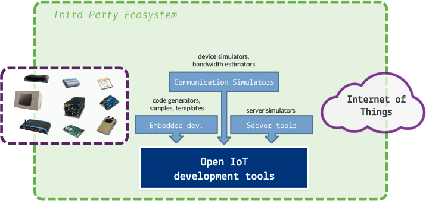

The IoT Working Group aims at providing an IDE built on top of Eclipse that enables development of complete IoT and M2M solutions.
We use the Eclipse
platform as a base for the creation of an interoperable and
extensible set of tools to simplify the development of IoT/M2M
solutions.
There are different sets of tools that we think
are important to support IoT/M2M Developers:
